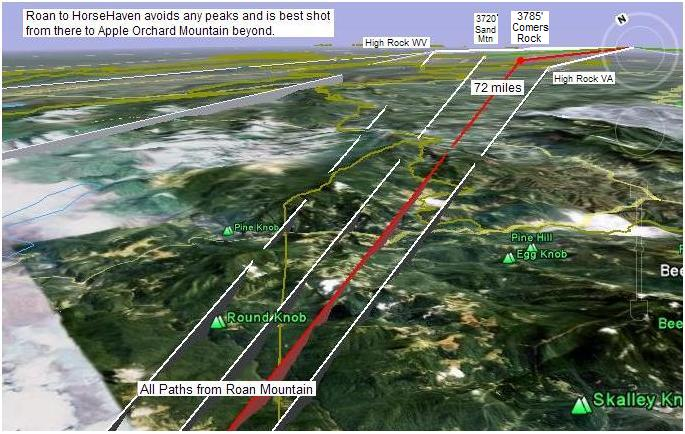

Sand Mountain is ideally located SE of Wythville in a location that has a rare view between mountains back to Roan mountain with no obstructions and also has a view to the Northeast to Apple Orchard Mountain. It is a non public site but is a sharp peak with several commercial and government relay buildings. The aerial view below suggests there is room for a car or two at the top. So far, access is unknown.
K4IJ reports: there is a digi on Sand. KW4FM-14 (not sure of the sid). It does a very good job around the area. The owner is Fred. [Bob comment: but I cannot find it on the APRS system? Maybe a packet node?]
ALTITUDE: . . . . . . . . . . . 3700 feet
POSITION: . . . . . . . . . . . . 3654.28N / 08104.06W
LINK NORTHEAST:. . . . Apple Orchard Mountain test with 146.685 Tone 100
LINK SOUTHWEST:. . . . Roan Mountain
REPEATER:. . . . . . . . . . . 146.775 Tone 103, input 144.670, K4EZ
DIGIPEATER!. . . . . . . . . KW4FM-3 (WIDEn-N - not new-N paradigm)
IGATE NEARBY: . . . . . . W4VPI-1
INTERFERRENCE: . . . . Heavy Paging interferrence to 2 meters
TEAM LEADER:. . . . . . . Mike Knight K4IJ. (KW4FM, Fred digi-owner has not been contacted yet)
. . . . . . . . . . . . . . . . . . . . . . Also working on it: William McKeehan KI4HDU (mckeehan*mckeehan.homeip.net)
COMMENTS: .
William McKeehan, KI4HDU (http://mckeehan.homeip.net) reports: . It took a bit longer than I had wanted, but we finally began talking about this on the net tonight. I suspect that we will be able to find some folks to cover the Clingmans, Roan or Sand Mountains. Once we have some specific volunteers named, I'll e-mail you to let you know for sure of there participation.
Mike Knight K4IJ [k4ij*comcast.net] updates 4 May: . Still no luck getting in touch with Fred KW4FM. I sent him an email last night but haven't seen anything yet. I can't commit yet but I may be able to run my D700 from Sand that day. I will check into what it takes to get access to the site. If I remember correctly it's not easy and the road is ruff.
Mike Knight K4IJ [k4ij*comcast.net] reports: . Would love to help. I know owners of repeaters on Sand and Apple. Not sure about Roan. Is that on the TN/VA line? The one problem I know of on Sand is heavy paging interference. My friend has a 2m repeater there that gets blasted. ... Also, there is a digi on Sand. KW4FM-3. It does a very good job around the area. The owner is Fred. You might want to contact him.
Pete Lascell [plascell*verizon.net] reports: I have never been to the Sand Mtn site at Wytheville, VA. It is a locked gate access. I think access can be had via the local two-way radio shop. I spoke to them many months ago when we were looking for 241 GHz paths beyond 100 km from Apple Orchard. I think they said we would have to be on the roof of the building for LOS to Apple Orchard. It is a 3 hour drive from Lynchburg, one way, to scope it out, so it was put on the back burner . . .
You might check out VA Repeater list for digi operators in Roanoke and west. I am not familiar with them other than the web site. I found it trying to chase the K4YW system which is in Wytheville, but on Big Walker Mtn.
This towers site shows Two-Way Radio, Inc as the dealer who has access.
The next two images show the Google Earth views of the RF paths from Roan Mountain to the from the southwest to Sand Mountain and from Sand Mountain to Apple Orchard Mountain..

BACKGROUND: See AT Golden Packet main page. . The purpose of this event is to field enough amateur radio emergency communications teams on mountain peaks in the Eastern USA to be able to communicate packets and APRS messages from end-to-end of the Appalachian Trail. Normally considered a 2000 mile hike, the RF path is on the order of only 1200 miles and we hope to do this in only 14 hops.
WHEN: This APRS Appalachian Trail Golden Packet Amateur Radio event will target either saturday or sunday of the 25/26th weekend in July to coincide with the ending of the Biennial Appalachian Trail Festival July 17 - 24, 2009 at Castleton State College, Rutland, VT. The weekend before, the 18th and 19th is the CQ World Wide VHF Contest, and the Scouts On-Target exercise. Those two opportunites are great pre-cursors for checking out the Golden Packet digipeater sites a week in advance as well as Field Day on June the 27/28th.
VOLUNTEERS: We need volunteers for the 15 or so stations along the route, but also it would be nice to get an amateur radio booth at the AT Festival to recruit some hikers into amateur radio. Showing them what we can do with our HT's should have some interest to a few of them. Most day hikers are really into GPS, so why not APRS too? . To sign up as a volunteer anywhere along the trail either contact wb4apr at amsat dot org. or the existing team that you see forming at each site on each of the individual web pages..
Bob, WB4APR
See my other GENERAL page on APRS applications and Ideas on the AT
Return to the APRS HOMEPAGE or SiteMap.